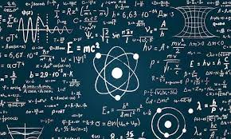

| La física cuántica es la disciplina que establece la base para
la construcción de los ordenadores cuánticos,
máquinas de alto procesamiento de datos.
Tal y como dijo el físico Richard Feynman, parafraseando a Niels Bohr:
“Si crees que entiendes la mecánica cuántica, en verdad no la entiendes”.
Y es que la física cuántica representa una disciplina de alta complejidad que,
en muchas ocasiones, ha despertado múltiples incógnitas y generado grandes
confusiones a aquellos que se
han adentrado en su estudio.
A su vez, no cabe duda de que se trata de una rama de la ciencia de lo más
fascinante,
que revela un mundo subatómico no visible ante nuestros ojos, lleno de
misterios y maravillas que
desafían la compresión de lo más cotidiano. Por esa razón, a pesar de las
leyendas de dificultad y
embrollo que la envuelven, vale la pena comprender cuáles son las bases del
estudio de la física cuántica,
pues es un punto clave para entender cuál es el comportamiento y la
apariencia real del mundo que nos rodea.
|
|
LA DUALIDAD ONDA-PARTÍCULA¿Te imaginas poder ser dos cosas al mismo tiempo? Parece algo imposible, ¿verdad? Pues bien, uno de los principios de la física cuántica indica que, para ciertas partículas, eso no es algo fantasioso y, de hecho, ocurre en realidad. Es el caso de la luz o de los electrones, los cuales, mientras viajan por el espacio podrán comportarse de dos maneras diferentes al mismo tiempo. Así, por un lado, podrán actuar como pequeñas partículas, tal y como si fuesen pequeñas bolitas o corpúsculos, con una posición y propiedades muy definidas. Pero, al mismo tiempo, podrían comportarse como ondas, tal y como si fuesen ondulaciones en el agua, extendiéndose y difundiéndose por el espacio sin una ubicación precisa. |
LA SUPERPOSICIÓN CUÁNTICASeguramente te suene haber oído hablar de la paradoja del gato de Schrodinger, un experimento mental en el que el científico presenta a un gato atrapado en una caja junto a un tarro de veneno que solo se abrirá si un átomo se descompone. Así, antes de abrir la caja, el gato se encontraría a la vez vivo y muerto, en una especie de estado de superposición, y solamente al abrir la caja y observar el estado del felino, encontraríamos que el sistema de caja-veneno-gato habría colapsado hacia una única solución final: vivo o muerto.  |